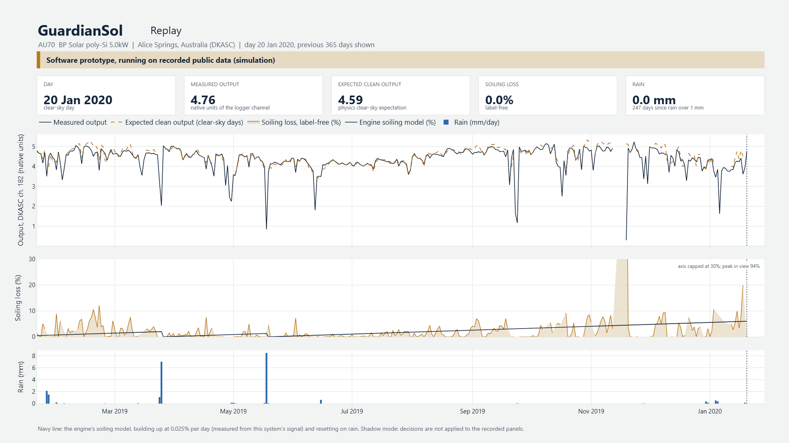
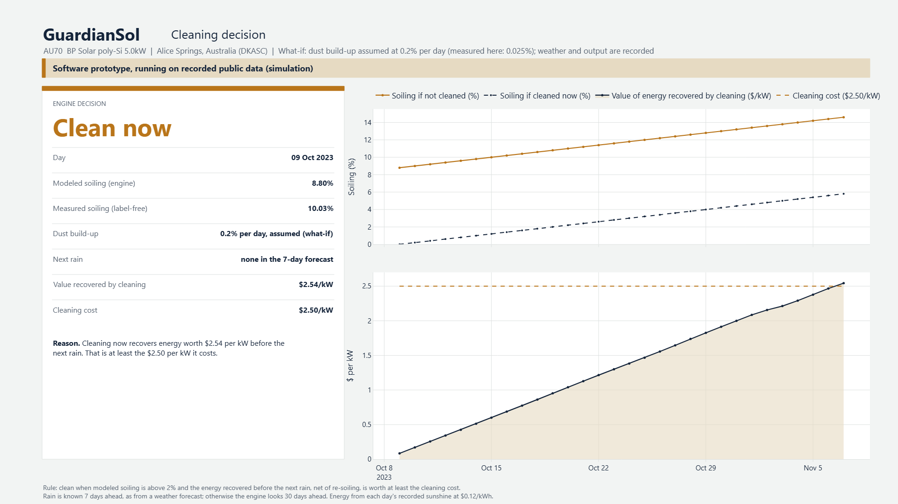

Dust costs desert solar plants energy and water
of global solar output is lost to dust every year, concentrated in the desert regions where the largest plants are being built.
Ilse et al., Joule (2019)
of water are used every year to clean solar panels. In the Gulf, much of that water is desalinated.
Panat and Varanasi, Science Advances (2022)
Most plants clean on a fixed schedule. Clean panels get washed while dirty ones wait, and rain that has already cleaned the panels is ignored. Camera and drone inspection can see the dust, but it adds hardware and labelled images, and the operator still has to decide whether cleaning today is worth its cost.
The electricity already shows the dust
GuardianSol compares what the panels produce with what they should produce when clean. The gap is dust. When rain washes the panels the gap closes, which confirms the reading without any manual labelling.
Read
Connects to the plant's existing inverters and reads current, voltage and power, together with sunlight and temperature.
Infer
A physics model estimates what the panels should produce under the same sun and heat. After filtering out clouds, heat and ageing, the remaining gap is dust.
Decide
Estimates how the loss will grow until the next rain in the weather forecast, and recommends cleaning only when the energy it recovers is worth more than the cleaning.
Nothing is added to the panels: no cameras, no drones, no soiling sensors.
The software prototype
The GuardianSol software runs today on recorded public data. It replays real solar systems day by day, decides each day whether to clean, and explains the decision.


What the tests on recorded data show
Tested in simulation on public data: eight systems at the Desert Knowledge Australia Solar Centre in Alice Springs from 2019 to 2023, and NREL PVDAQ systems in the US desert, with NASA POWER weather data.
cleanings a year in Alice Springs, fixed 30-day schedule versus GuardianSol. Dust built up slowly there and rain did the cleaning: in five years, no cleaning would have paid for itself. Total cost, lost energy plus cleaning, was 89% lower.
lower forecast error at a new site in the same region when it starts from the shared model, for all 8 systems tested.
lower forecast error at a new US desert site when it starts from a model shared with sites in Australia.
In a what-if with faster dust build-up (0.1 to 0.5% a day, assumed), GuardianSol schedules 1 to 9 cleanings a year, only when they pay, and has the lowest total cost of the strategies tested.
All results come from simulation on recorded data, at $0.12 per kWh and $2.50 per kW per cleaning, not from a live plant. The Gulf is dustier than the test sites; field tests in Qatar are the next step.
Runs on site, learns as a fleet
Works offline
Every decision is computed on the device at the plant. A weak or lost connection does not stop it.
Plant data stays on site
Raw production data never leaves the plant, which matters for critical energy infrastructure.
New sites start with experience
Devices share learned model parameters through federated learning, never raw data, so a new plant does not start from zero.
Low-cost hardware
The forecasting model has fewer than 10,000 parameters, small enough for an inexpensive edge computer.
Where GuardianSol stands
Done
- Working software prototype, tested on recorded data from two continents
- Research paper on the validation written
Next
- Build the edge device and connect it to commercial inverters
- Field tests on real panels in Qatar
- A pilot with a plant operator: half the plant on its usual schedule, half on GuardianSol
Pre-pilot and pre-revenue.
Ons is an AI researcher working on federated learning and edge AI.
The idea for GuardianSol came from an international mission design competition, while designing the power system for a crewed mission to Mars. Dust on the solar panels was one of the hardest problems, and the same problem costs desert solar plants on Earth today.
Looking for a first pilot partner
If you operate, maintain or build solar plants in the Gulf and would like to test GuardianSol on a few strings of panels, please get in touch.